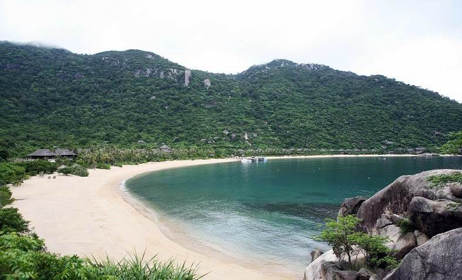
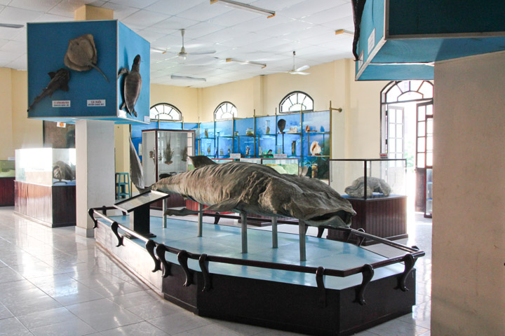

Bật mí kinh nghiệm đặt phòng homestay tại Nha Trang giá rẻ
Được công nhận là một trong những vịnh biển đẹp nhất thế giới với thành phố êm ả nằm ngay bên bờ biển, du lịch Nha Trang trung tâm của tỉnh Khánh Hòa – miền đất được mệnh danh là “xứ Trầm, biển Yến”. “Hòn ngọc của biển Đông” này có một sức lôi cuốn đặc biệt đối với khách du lịch tứ phương. Để hiểu rõ hơn và có thêm thông tin hữu ích cho hành trình du lịch Nha Trang của bạn, cùng tham khảo những kinh nghiệm sau đây nhé.
1. Nên đi du lịch Nha Trang vào thời điểm nào?
Nằm ở khu vực nam Miền Trung, Nha Trang cũng có những đặc thù về điều kiện tự nhiên của miền Duyên Hải Nam Trung Bộ. Khí hậu Nha Trang tương đối ôn hòa, không khắc nghiệt như ở miền Bắc và cũng không thất thường như miền Nam. Mùa đông ở Nha Trang ít lạnh, mùa hè thường kéo dài nhưng nắng nóng không quá gay gắt.
Trung tầm từ tháng 3 đến tháng 9 là thời gian thích hợp nhất để du lịch Nha Trang

Chính vì vậy, trung tầm từ tháng 3 đến tháng 9 là thời điểm thích hợp nhất để có những chuyến đi du lịch Nha Trang thú vị. Nhưng bạn cũng cần lưu ý vào khoảng thời gian này, các khách sạn Nha Trang thường xuyên trong tình trạng cháy phòng, nên bạn hãy đặt phòng trước khi tới đây để tránh mất thời gian đi tìm phòng khách sạn.
2. Đến Nha Trang bằng phương tiện gì?
Để đến Nha Trang bạn có thể di chuyển theo nhiều cách khác nhau, tùy vào túi tiền, quỹ thời gian cũng như sở thích của mỗi người. Có 3 phương tiện phổ biến gồm:
Máy bay
Hiện nay, các hãng bay như Vietnam Airlines, Jetstar, Vietjet Air đều có chuyến từ Hà Nội, TP. Hồ Chí Minh và Đà Nẵng để đến sân bay Cam Ranh. Bạn có thể đặt mua vé trực tuyến thông qua các hãng hàng không này, sau đó đến sân bay Cam Ranh rồi về trung tâm thành phố Nha Trang. Tất nhiên là đừng quên các hãng bay luôn có nhiều đợt khuyến mãi vé bay như “triệu vé 0đ” của Vietjet,… Chính vì vậy, săn giá vé tốt sẽ giúp bạn tiết kiệm được 1 khoản chi phí đáng kể khi di chuyển bằng phương tiện này đến Nha Trang nhé. Bạn có thể xem và đặt vé rẻ tại đây.
Tàu hỏa
Cũng có các trạm di chuyển từ Hà Nội, TP Hồ Chí Minh hay từ Đà Nẵng vào Nha Trang với mức giá vé vào khoảng (250.000 – 400.000đ/lượt đi). Bạn có thể book vé tại các hãng tàu để được hỗ trợ đặt vé, khoang ngồi cho chuyến đi đến phố biển Nha Trang.
Xe khách
Có rất nhiều chuyến xe khách đi Nha Trang, bạn có thể lên mạng tìm trước và đặt mua online, hoặc đến trực tiếp bến xe tại các phòng vé để tìm mua.
3. Di chuyển tại Nha Trang như thế nào?
Nếu đây là lần đầu tiên bạn đến vịnh biển xinh đẹp này thì việc chuẩn bị cho mình một bản đồ thành phố Nha Trang trong túi sẽ vô cùng thích hợp để bạn không để bị lạc khi di chuyển nhé.
Đi taxi
Ngoài ra, có rất nhiều hãng taxi cho bạn lựa chọn với mức giá dao động từ sân bay Cam Ranh về trung tâm thành phố khoảng 250.000 – 350.000 đồng/lượt vì quãng đường từ sân bay về trung tâm hơn 35km. Bạn hãy lưu bảng giá hãng taxi bên dưới vào cẩm nang du lịch Nha Trang của mình để tiện cho việc tìm kiếm.
Xe bus
Các tuyến bus tại Nha Trang với giá vé từ 5.000đ/lượt cũng là lựa chọn hoàn hảo cho bạn nếu chuyến đi của bạn có mức kinh phí hạn hẹp hơn.
Di chuyển bằng cano, tàu
Các địa điểm du lịch ở Nha Trang chủ yếu là biển, vì thế ngoài những phương tiện kể trên thì bạn còn cần cần đến cano và tàu để đi ra đảo. Nếu đi ít người bạn có thể đi ghép với các đoàn khác để tiết kiệm chi phí. Ngược lại nếu đi đông thì có thể thuê riêng tàu hoặc cano đi cho thoải mái. Thông thường giá vé tàu, cano đi các đảo ở Nha Trang thường dao động trong khoảng từ 150.000 đồng đến 200.000 đồng.
4. Vịnh Ninh Vân
Cách thành phố biển Nha Trang khoảng 60 cây số, nằm trên bán đảo Hòn Mèo, vịnh Ninh Vân mang đậm nét hoang sơ và thuần khiết. Nơi đây đặc biệt thích hợp cho những ai muốn tìm cảm giác thư thái trong không gian biển tĩnh lặng. Ngoài ra, bạn cũng có thể ngắm san hô, lặn biển hay thử chơi lướt sóng, lướt ván, đi thuyền Kayak.
Di chuyển: Từ Nha Trang, đi tàu cao tốc chỉ mất khoảng 20 phút để đặt chân đến vịnh biển xinh đẹp này. Thời gian tham quan: Tối thiểu 12 giờ
Khu nghỉ dưỡng Six Senses Ninh Vân Bay Nha Trang là khu nghỉ dưỡng cao cấp duy nhất nằm trên bán đảo tuyệt đẹp của Vịnh Ninh Vân. Đây là khu resort đạt tiêu chuẩn 5 sao quốc tế và là một trong những resort đầu tiên của Việt Nam nhận được nhiều giải thưởng danh giá nhất của các hiệp hội du lịch Việt Nam và thế giới. Trong đó là giải thưởng danh giá nhất là giải thưởng Du lịch Quốc tế 2012 (World Travel Awards 2012).
5. Viện Hải dương học Nha Trang
Viện Hải dương học được thành lập vào năm 1923, tọa lạc ở số 1, Cầu Đá cách trung tâm thành phố Nha Trang khoảng 6km về hướng Đông Nam. Nơi đây có trên 20.000 mẫu vật của 4.000 loại sinh vật biển và nước ngọt được sưu tầm và gìn giữ trong nhiều năm. Đặc biệt, đến Viện Hải dương học bạn sẽ được chiêm ngưỡng bộ xương cá voi khổng lồ dài gần 26m, cao 3m với 48 đốt sống được phục chế đầy đủ. Di chuyển: xe máy hoặc taxi Thời gian tham quan: 2 – 4 tiếng